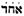

Echad mi yodea
Qui sait qui est Un - One who knows?
Comptine pour la veille de Pâque juive
A Hebrew rhyme for Passover eve
Echad mi Yodea
Ballet d'Ohad Naharin dansé par l'ensemble Batsheva
Echad mi yode'a Echad ani yode'a Echad Elokeinu shebashamaim uva'aretz. Shnaim mi yode'a Shnaim ani yode'a shnei luchot habrit echad elokeinu shebashamaim uva'aretz. Shlosha mi yode'a, Shlosha ani yode'a. Shlosha avot, shnei luchot habrit echad elokeinu shebashamaim uva'aretz. Arba mi yode'a arba ani yode'a arba imahot Shlosha avot, shnei luchot habrit echad elokeinu shebashamaim uva'aretz. Chamisha, mi yode'a Chamisha, ani yode'a Chamisha chumshei torah arba imahot Shlosha... Shisha, mi yode'a? Shisha, ani yode'a Shisha, sidre mishna Chamisha chumshei torah arba... Shiv'ah mi yode'a shiv'ah ani yode'a. shiv'ah yemei shabatah Shisha, sidre mishna Chamisha ... Shmonah mi yode'a shmonah ani yode'a shmonah yemei milah shiv'ah yemei shabatah Shisha,.. Tish'ah mi yode'a tish'ah ani yode'a. tish'ah chodshei leidah shmonah yemei milah shiv'ah ... Asara mi yode'a asara ani yode'a asara dibraya tish'ah chodshei leidah shmonah ... Achad asar mi yode'a achad asar ani yode'a achad asar kochvaya asara dibraya tish'ah ... Shneim-asar mi yode'a shneim-asar ani yode'a shneim-asar shivtaya achad asar kochvaya asara ... Shlosha-asar mi yode'a Shlosha-asar ani yode'a Shlosha-asar midaya shneim-asar shivtaya achad ... |
Question : «Qui sait qui est un? » Réponse : « Un, moi je sais : Un est notre Dieu au ciel et sur la terre. » Question : « Qui sait qui est deux? » Réponse : « Deux, moi je sais : les deux tables de l'Alliance. Refrain : "Un est notre Dieu au ciel et sur la terre." Question : « Qui sait qui est trois? » Réponse : « Trois, moi je sais : les trois patriarches. Refrain : "Deux tables de l'Alliance, Un est notre Dieu au ciel et sur la terre." Question : « Qui sait qui est quatre? Réponse : « Quatre, moi je sais : les quatre mères en Israël. Refrain: "Trois patriarches, Deux tables de l'Alliance, Un est notre Dieu au ciel et sur la terre." Question : « Qui sait qui est cinq? » Réponse : « Cinq, moi je sais : les cinq livres de Moïse. Refrain : "Quatre mères en Israël, Trois . . . ." Question : « Qui sait qui est six? Réponse : « Six, moi je sais : les six livres de la Mishna. Refrain : "Cinq livres de Moïse, Quatre . . . ." Question : « Sept, qui sait ? Réponse : « Sept, moi je sais : les sept jours de la semaine. Refrain : "Six livres de la Mishna, Cinq . . . ." Question : « Huit, qui sait ? Réponse : « Huit, moi je sais : les huit jours de la circoncision. Refrain: "Sept jours de la semaine, Six . . . ." Question : « Neuf, qui sait ? Réponse : « Neuf moi je sais : les neuf mois de procréation. » Refrain : « Huit jours de circoncision, sept. . . ." Question : « Dix, qui sait ? Réponse : « Dix moi je sais : les Dix Commandements. Refrain : " Neuf mois de grossesse, Huit... " Question : « Onze, qui sait ? Réponse : « Onze moi je sais : les onze étoiles » (dans le rêve de Joseph : Gen. xxxvii. 9). Refrain: "Dix Commandements, Neuf. . . ." Question : « Douze, qui sait ? Réponse : « Douze moi je sais : les douze tribus d'Israël. Refrain : "Onze étoiles, dix..." Question : « Treize, qui sait ? Réponse : « Treize moi je sais ; les treize attributs de Dieu » (Ex. xxxiv. 6-7). Refrain: « Douze tribus d'Israël, onze. . . . » |
Question: "Onewho knows?" Answer: "OneI know: One is our God in heaven and on earth." Question: "Twowho knows?" Answer: "TwoI know: the two tables of the Covenant." Chorus: "One is our God in heaven and on earth." Question: "Threewho knows?" Answer: "ThreeI know: the three patriarchs." Chorus: "Two tables of the Covenant, One is our God in heaven and on earth." Question: "Fourwho knows?" Answer: "FourI know: the four mothers in Israel." Chorus: "Three patriarchs, Two tables of the Covenant, One is our God in heaven and on earth." Question: "Fivewho knows?" Answer: "FiveI know: the five books of Moses." Chorus: "Four mothers in Israel, Three . . . ." Question: "Sixwho knows?" Answer: "SixI know: the six books of the Mishnah." Chorus: "Five books of Moses, Four . . . ." Question: "Sevenwho knows?" Answer: "SevenI know: the seven days of the week." Chorus: "Six books of the Mishnah, Five . . . ." Question: "Eightwho knows?" Answer: "EightI know: the eight days of circumcision." Chorus: "Seven days of the week, Six . . . ." Question: "Ninewho knows?" Answer: "NineI know: the nine months of child-bearing." Chorus: "Eight days of circumcision, Seven. . . ." Question: "Tenwho knows?" Answer: "TenI know: the Ten Commandments." Chorus: "Nine months of childbearing, Eight. . . ." Question: "Elevenwho knows?" Answer: "ElevenI know: the eleven stars" (in Joseph's dream: Gen. xxxvii. 9). Chorus: "Ten Commandments, Nine. . . ." Question: "Twelvewho knows?" Answer: "TwelveI know: the Twelve Tribes of Israel." Chorus: "Eleven stars, Ten. . . ." Question: "Thirteenwho knows?" Answer: "ThirteenI know; the thirteen attributes of God" (Ex. xxxiv. 6-7). Chorus: "Twelve Tribes of Israel, Eleven. . . ." |

Extrait de l' Encyclopaedia Hebraïca
|
ECHAD MI YODEA' ("Qui sait qui est Un?) Par Kaufmann Kohler C'est l'incipit d'une comptine hébraïque qui, avec « Had Gadya » (le cabri), est récitée à la fin du Seder, la veille de la Pâque juive. Elle se compose de treize strophes, et a sans doute eu à l'origine la forme d'un dialogue, ou d'un chur. Ce chant ne se rencontre, nous dit Zunz dans "Gottesdienstliche Vorträge" p. 133, que dans les "haggadas" (livres de rituels) de Pessah d' Allemagne à partir du XVe siècle. Or, plus tard, c'est Zunz lui-même qui a constaté sa présence dans le rituel des Juifs d'Avignon. Chez eux, c'était un chant que l'on chantait à table à toutes les fêtes sans distinction ("Journal universel du peuple Juif," iii. 469). Il en résulte que la théorie proposée par Zunz et peaufinée par le Dr Perlès (dans "Mélanges offerts au Pr. Grätz," 1887, pp. 37 et suiv. et dans l'« Almanach » de Brüll, IV. 97 et suiv.), selon laquelle ce chant serait l'adaptation d'un chant traditionnel allemand, doit être réexaminée. Et ce, malgré les parallèles frappants établis par Perlès qui s'appuye sur "Les chants populaires allemands" de Simrock (1851, p. 520). On y voit comment ce qui était à l'origine une chanson à boire de paysans a été adapté par les moines. Les nombres (de un à douze) furent utilisés pour affirmer : "Un est le Seigneur Dieu qui règne au ciel et sur la terre; deux sont les Tables de Moïse; trois, les Patriarches; quatre, les Evangélistes; cinq, les Plaies du Christs; six, les Urnes de vin aux noces de Cana; sept, les Sacrements; huit, les Béatitudes; neuf, les Cohortes angéliques; dix, les Commandements; onze, les onze mille Vierges; douze, les douze Apôtres." D'autres rapprochements avec des chants allemands sont faits dans "Revue d'Histoire des Juifs d'Allemagne" de L. Geiger III. 93, 234 (note), 238; tandis que Sander (« La vie du peuple grec contemporain », 1844, p. 328) établit un parallèle avec un vieux chant de l'Église grecque. Kohler, dans la "Revue de Geiger" (op.cit. en note) p. 239, en fait de même avec un cantique anglais »; et Green, dans "La Hagada revisitée", p. 98, Londres, 1897, avec une comptine écossaise. Un trait caractéristique d' «Echad Mi Yodea» est d'énumérer les nombres jusqu'au fatidique treize (cf. "D.M.L.Z." xxix. p. 634, note) où le chant se termine comme pour faire comprendre au Juif que, pour lui, treize (=  ) est un nombre sacré, qui par conséquent porte bonheur.Kohler (op.cit.) en cherchant l'origine des chansons et devinettes populaires énumératives est remonté jusqu'à d'antiques sources orientales (cf. Cosquin, "Contes de Lorraine," 1876). Bibliographie: Kohler, « Contes et chansons, miroirs de la vie quotidienne des Juifs », dans La « Revue d'Histoire des Juifs d'Allemagne » de L. Geiger, 1889, iii. 234-240. Le site "Trois chants du Séder des Juifs d'Alsace" ajoute un 3ème chant à la liste des chants du Séder et précise qu'on les chante dans ce pays, depuis le 15ème siècle au moins, à la fois en hébreu (ou en araméen) et en judéo-allemand de l'Ouest dit "jedischdaitsch": c'est également une chanson énumérative, "Adir Hou", dans laquelle on demande à Dieu de reconstruite au plus tôt Son temple en lui prêtant des qualités, énumérées au long des 8 couplets, qui suivent l'ordre de l'alphabet hébraïque. E'hod mi Yodea énonce 13 vérités de la foi juive de façon cumulative ainsi qu'on l'a dit. 'Had Gagja (le Cabri) ne paraît imprimé sur un recueil de chants qu'à partir de l'édition de 1590 de la Haggada de Prague (il en était absent dans l'édition de 1526). L'origine semble être un chant populaire allemand "Der Bauer schickt den Jäckel 'naus". Le chant français correspondant est "Ah, sortiras-tu, biquette, de ce chou-là?" C'est un chant récapitulatif en 9 strophes dont la longueur s'allonge à chaque fois. La neuvième strophe du chant de Seder s'énonce ainsi: "Da kam der Liewe Harjet und schecht den Malach Hamoves, der hat geschecht den "Shochet "der hat geschecht den Ochsen, der hat getrunken das Wâsserlein, das hat verlöscht das Feuerlein, das hat verbrannt das Stückelein, das hat g'schlagen das Hundelein, das hat gebissen das Kätzelein, das hat gegessen das Zicklein, das hat gekauft mein Väterlein ; um zwei Pfennig ein Zicklein, ein Zicklein." "Alors vint le Bon Dieu qui abattit (rituellement) l'Ange de la mort, qui abattit le sacrificateur qui abattit le boeuf... qui dévora le cabri acheté pour deux sous par mon père, un cabri, un cabri!" On a proposé une interprétation historique savante de cette cascade d'événements, mais elle laisse sceptique les auteurs du site, Fredy Raphaël et Robert Weyl, qui soulignent cependant que la 9ème strophe est l'élément essentiel qu'a introduit l'auteur juif dans ce chant populaire: l'existence d'un Dieu juste qui par delà les vicissitudes fait triompher le droit. |
ECHAD MI YODEA' ("One; who knows?"): By: Kaufmann Kohler Initial words of a Hebrew rhyme which, with "Had Gadya" (The Kid), is recited at the close of the Seder on Passover eve. It consists of thirteen numbers, and was probably recited originally as a dialogue, if not in chorus. This song, stated by Zunz in "G. V." p. 133 to occur only in German Pesah haggadahs since the fifteenth century, was later found by Zunz himself in the Avignon ritual as a festal table-song for holy-days in general ("Allg. Zeitung des Judenthums," iii. 469). The theory, therefore, advanced by Zunz, and worked out in detail by Perles ("Grätz Jubelschrift," 1887, pp. 37 et seq.; Brüll's "Jahrb." iv. 97 et seq.), that it is an adaptation of a German folk-song, must be revised, notwithstanding the striking parallels brought by the former from Simrock's "Die Deutschen Volkslieder" (1851, p. 520), where it is shown that what was originally a peasants' drinking-song was adapted by monks, and the numbers (one to twelve successively) declared to signify: "One, the Lord God who lives in heaven and earth; two, the tablets of Moses; three, the Patriarchs; four, the Evangelists; five, the wounds of Jesus; six, the jugs of wine at the wedding of Cana; seven, the sacraments; eight, the beatitudes; nine, the choruses of angels; ten, the Ten Commandments; eleven, the eleven thousand virgins; twelve, the twelve Apostles. " Other German parallels are given in L. Geiger's "Zeitschrift für die Geschichte der Juden in Deutschland," iii. 93, 234 (note), 238; while Sander ("Das Volksleben der Neugriechen," 1844, p. 328) has compared an old Greek Church song; Kohler, in Geiger's "Zeitschr." l.c. p. 239, an English Church song; and Green, in "The Revised Hagada," p. 98, London, 1897, a Scotch nursery-rime. A peculiar feature of Echad Mi Yodea' is that it proceeds to the unlucky number thirteen (see "D. M. L. Z." xxix. p. 634, note), and stops there as if to make the Jew feel that with him thirteen(=) is a holy, and therefore lucky, number. The origin of the numerical folk- or riddle-song has been traced by Kohler (l.c.) to ancient Oriental sources (comp. Cosquin, "Contes de Lorraine," 1876). Bibliography: Kohler, Sage und Sang im Spiegel Jüdischen Lebens, in L. Geiger's Zeitschrift für die Gesch. der Juden in Deutschland, 1889, iii. 234-240. The site "Three songs of the Seder of the Jews of Alsace" adds a 3rd song to the list of Seder songs, and specifies that they have been sung in this country, since the 15th century at least, both in Hebrew (or Aramaic) and in Western Judeo-German called "jedischdaitsch": it is also an enumerative song "Adir Hou" in which God is asked to rebuild His temple as soon as possible by attributing to Him qualities, listed throughout the 8 verses, which follow the order of the Hebrew alphabet. E'hod mi Yodea states 13 truths of the Jewish faith cumulatively as already stated. 'Had Gagja (the Goat) does not appear printed on a collection of songs until the 1590 edition of the Prague Haggadah (it was absent in the 1526 edition). The origin seems to be a German folk song "Der Bauer schickt den Jäckel 'naus". The corresponding French song is "Ah, will you, little kid, get out of this cabbage?" It is a recapitulative song in 9 stanzas whose length increases each time. The ninth stanza of the Seder song reads as follows: "Da kam der Liebe Herrgott und schlachtete den Moloch Hamoves, der hat geschlachtet den Schlächter, der hat geschlachtet den Ochsen, der hat getrunken das Wässerlein, das hat verlöscht das Feuerlein, das hat verbrannt das Stöckelein, das hat geschlagen das Hundelein, das hat gebissen das Kätzelein, das hat gegessen das Zicklein, das hat gekauft mein Väterlein, um zwei Pfennig, ein Zicklein, ein Zicklein." "Then came the Good Lord who (ritually) slaughtered the Angel of Death, who slaughtered the priest who slaughtered the ox... who devoured the kid bought for twopence by my father, a kid, a kid!" A scholarly historical interpretation of this cascade of events has been proposed, but it leaves the authors of the site, Fredy Raphaël and Robert Weyl, sceptical, who nevertheless emphasize that the 9th stanza is the essential element that the Jewish author introduces into this popular song: the existence of a just God who beyond all vicissitudes makes law triumph. |
Voici des liens qui ouvrent sur des chants et sujets apparentés:
Here are links to related songs and topics:
Pater noster (Chant parodique breton / a Breton parodic Song)
"Les douze jours de l'année" ("Perdrioles" de Flandre et de Cambrésis / "Partridge songs" of Flanders and Cambresis)
De Twaelf Getallen (Chant de foi de Flandres / a Flemish Song of faith)
The twelve Days of Christmas ("Perdrioles"anglaise, écossaise, cornique... / English, Scottish, Cornish "Perdrioles")
Green grow the rushes O (Comptine anglaise - an English Counting rhyme)
Ehad mi yodéa (Chant de foi hébreu/ Jewish Song of Faith)
Calendrier de Coligny
The Calendar of Coligny
Apollon & Heraclius
Mahabharata & Gosperoù ar Raned
Noms des mois / Names of the months
Les Séries (Vêpres des grenouilles)